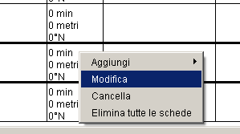

|
La Schermata Principale
si presenta così quando carichi il programma:

Appare lo scheletro del percorso rettificato composto da 5 colonne che
da sinistra indicano rispettivamente:
Sinistra lontano, Sinistra vicino, Dati
del percorso, Destra vicino, Destra lontano.
Da qui puoi anche usare i menu a tendina.
Puoi cominciare a riempire il modulo partendo dalla scheda numero 1 inserendo
i dati relativi al primo tratto di strada. Per riempire la colonna dati
devi schiacciare il tasto destro del mouse e scegliere "Modifica",
apparirà una finestra in cui ti verrà chiesto di inserire i dati
relativi. Naturalmente con "Cancella" la scheda evidenziata
verrà rimossa, con "Elimina tutte le schede" si elimineranno
tutte le schede e con "Aggiungi prima" o "Aggiungi dopo"
verrà aggiunta una scheda nuova prima o dopo la cella evidenziata.

|